012 weeks
AI Opportunity Sprint
I map your sales, tender or operations workflow and find the two or three places where AI saves real money.
You get: a ranked list of opportunities with costs, risks and a 90-day plan. No hype deck.
Mechanical engineer · MBA in AI for Business · PMP®
I translate between the industrial economy and the intelligence economy.
I come from the tender rooms and site visits of the Gulf's oil and gas supply sector. Now I design the strategy, the business case and the AI agents that make that work faster and smarter.
Three ways to work together. Most clients start with the sprint.
I map your sales, tender or operations workflow and find the two or three places where AI saves real money.
You get: a ranked list of opportunities with costs, risks and a 90-day plan. No hype deck.
One working AI agent, RAG assistant or automation, built on your own documents and data.
You get: a running tool your team uses, measured against the old way. Local models if your data is confidential.
Hands-on training for engineering, sales and management teams, in Arabic or English.
You get: a team that leaves using AI on its own files, not just talking about it.
An engineering drawing shows one object from the front, the side and the top. This is me the same way: the industry I know, the business case I can build and sell, and the AI I can build myself.
From technical support to tech sales manager, I've worked across KOC, KNPC, KIPIC and KJO projects: tenders, submittals, principals, vendor registration and the people who sign off.
My MBA in AI for Business and the AWS AI Business Strategist certification are about choosing, funding and governing AI. PMP is how I deliver it. Years in sales and BD are how I get it adopted.
Multi-agent systems, RAG pipelines, statistical models and anomaly detection. Top 10% at the University of Tokyo's GCI data science program, now in its Practical AI Engineering pilot.
| Capability | Industry | Business | AI |
|---|---|---|---|
| Win tenders | Pricing tenders for oil and gas supply | Margin decisions, L1 by 0.5% | Statistical competitor-bid model |
| Use technical knowledge faster | Submittal packages and datasheets | Faster turnaround, fewer coordinator errors | Local RAG engine (n8n, Ollama, Pinecone) |
| Make sales teams productive | Accounts across KOC and KNPC projects | CRM, follow-ups, visit planning | Sales Scribe, a local LangGraph pipeline |
| Choose the right AI bets | Knowing where field pain really is | MBA, AWS AI Business Strategist, PMP | Enough depth to scope and build it |
Each project shows the problem, what I built and what changed.
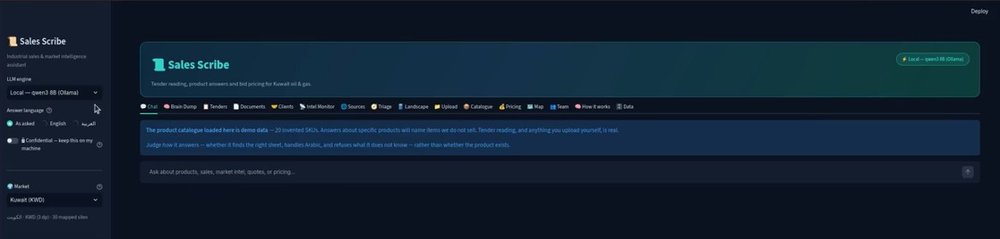
"LLMs write words, code writes numbers." An AI assistant that finds Gulf tenders, reads them, prices the bid and drafts the quotation, in Arabic or English.
It watches tender portals across six GCC markets, extracts about fifteen key facts from each tender with a link to the source line and a confidence label, prices bids with gradient boosting trained on award history, and builds quotations and submittals on the company's own template. Every figure is rebuilt from the database, never written by the model. For confidential documents the whole pipeline runs locally, so nothing leaves the machine. It ships with 74 regression tests, each one a bug that really happened, like Kuwaiti dinars (three decimals) being read as Saudi riyals (two).
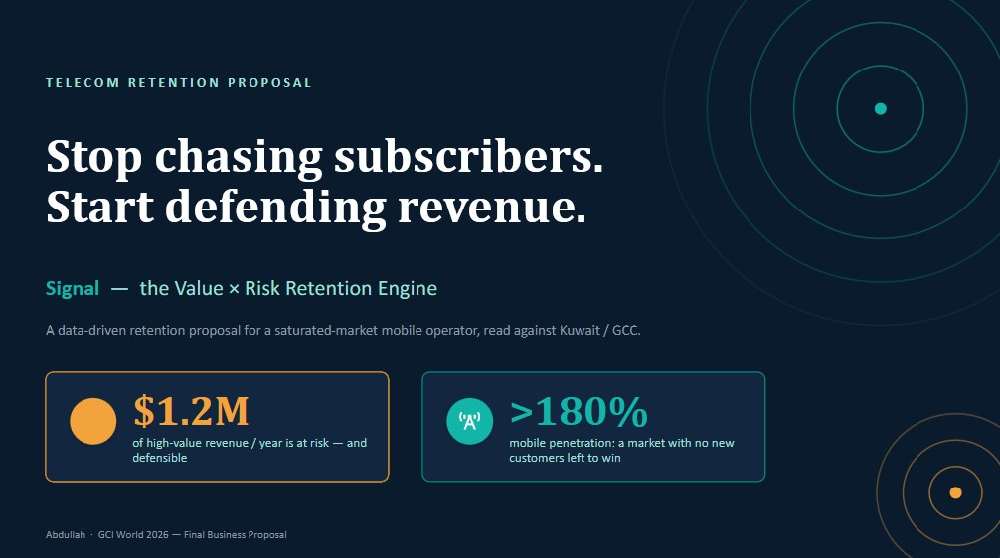
Found $1.2M a year of high-value revenue at risk, and showed how to defend it.
A value × risk retention engine for a mobile operator in a saturated market, where penetration is above 180% and there are no new customers left to win. An end-to-end churn pipeline with XGBoost as the champion model, turned into a retention strategy and a business proposal read against the Gulf market. Built during the University of Tokyo GCI World program.
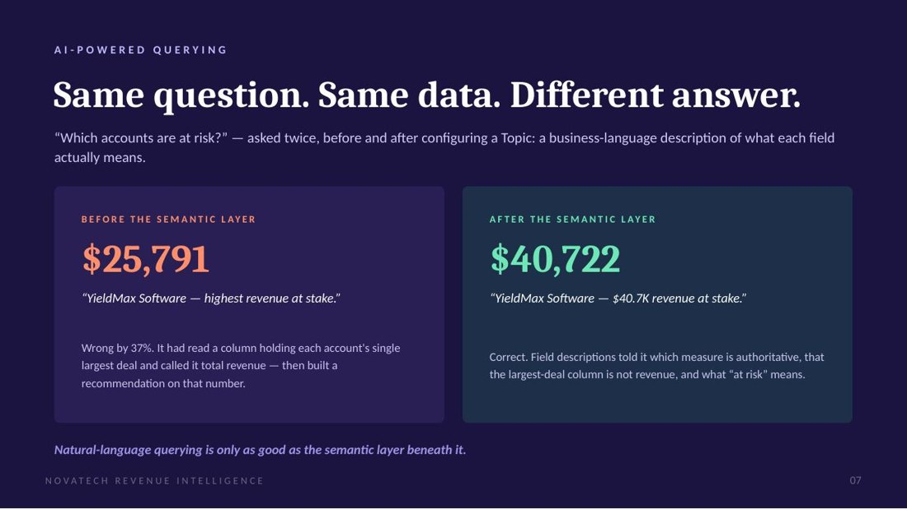
Three siloed systems in one dashboard, three undocumented data defects found, and an AI answer that was wrong by 37% fixed.
A revenue team was copying numbers from a CRM, a marketing platform and a support desk by hand every week. I unified them in Amazon Quick, caught a join that inflated revenue 127 times before it reached any figure, and configured the semantic layer so plain-English questions return the right number. Capstone of the Udacity × AWS nanodegree, on the course's synthetic data.
Predicted competitor bids. The next tender was won at L1, 0.5% below the second bidder.
My company was either losing tenders or winning them with money left on the table. I built a statistical model on past tender results to estimate where competitors would price, then recommended our price. One win is evidence, not proof, so the write-up shows the method and its limits.
What I'm building next. Each one gets a full write-up and code when it ships.
A tender parsing tool: drop in a tender, get the requirements, deadlines, bonds and scope pulled out and checked, in Arabic or English.
A RAG chatbot that answers from a company's own product catalogues and equipment datasheets, with the source page for every answer.
Engineers spend 20 to 40 hours compiling each submittal by hand. This pulls the technical data and checks it against project requirements, on local models. It started as my MBA capstone.
A fine-tuned language model that answers customers in a retail chain's own brand voice.
They had the data. They didn't listen. A retrospective study of whether modern anomaly detection could have flagged Chernobyl in time.
Grouped by what they prove. Every badge links to its public verification.
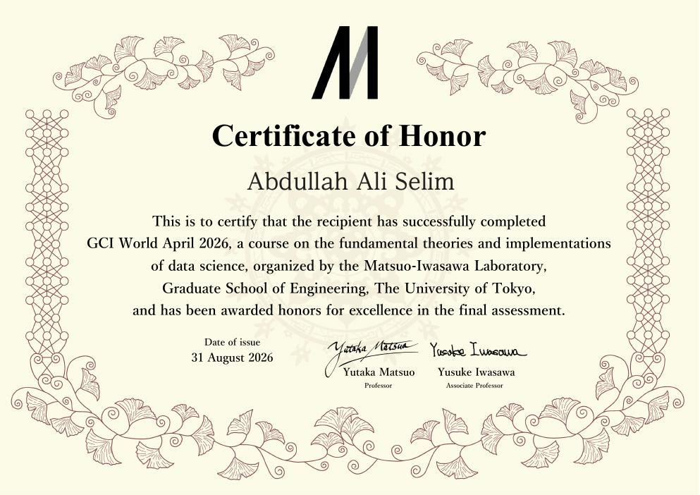
GCI World is the Matsuo-Iwasawa Lab's course on the theory and practice of data science, run by the Graduate School of Engineering at the University of Tokyo. The April 2026 session drew more than 25,000 participants worldwide. I was awarded honors for excellence in the final assessment, placing in the top 10% of the final assessment and the top 7.6% overall.
That result led to my selection, through the lab's application process, for its Practical AI Engineering Pilot Course, which started in October 2026.
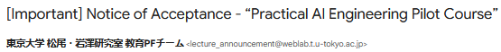
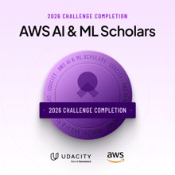
Selected for one of roughly 4,500 places from more than 100,000 applicants, and completed the Agentic AI for Business Professionals nanodegree on the business intelligence track.
Verify link coming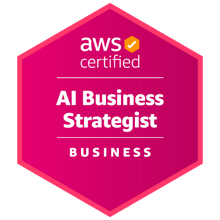
Choosing, funding, governing and scaling AI. Built for the people who lead AI adoption, including sales and BD.
Verify on Credly ↗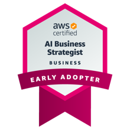
Among the first to earn the certification in its launch window.
Verify on Credly ↗Ranked second in my class with a GPA of 3.98 of 4: an A in every course but one A-. I did it so the business case and the model live in the same head.
Capstone: an AI submittal automation system for the Gulf oil and gas sector, built on retrieval augmented generation. See the project
View diploma ↗ · Also verified through WES, belowMy academic degrees, independently verified for employers worldwide.
Verify on Credly ↗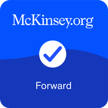
Structured problem solving and clear communication, the McKinsey way.
Verify on Credly ↗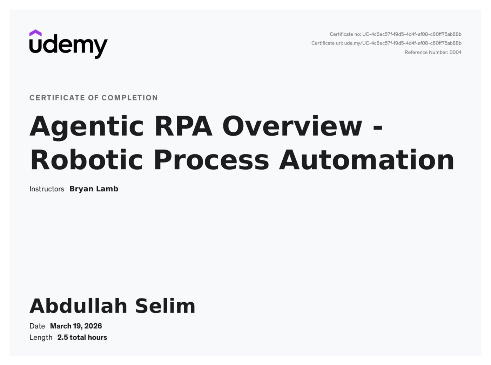
Automation explained from the strategy side: where agents and RPA pay off, and where they don't.
View certificate · Verify on Udemy ↗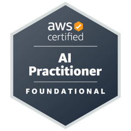
Foundations of AI, ML and generative AI services on AWS.
Verify on Credly ↗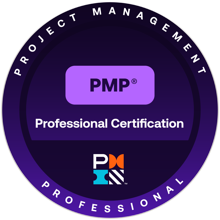
I run AI work the way I ran equipment packages: scope, schedule, risk, sign-off.
Verify on Credly ↗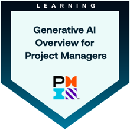
Where generative AI fits into planning, delivery and risk.
Verify on Credly ↗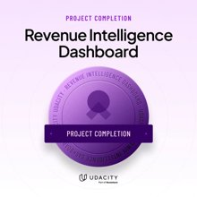
The graded final project of that nanodegree: an executive revenue dashboard built in Amazon Quick.
See the project ↗Graduation project: an underwater ROV prototype for pipeline maintenance. Five robots built during my degree.
Reading and adjusting the drawings that equipment packages are built from.
Before I wrote code, I was in the room where deals are won and lost. That is why my tools fit how industrial companies really work.
We kept either losing tenders or winning far below what we could have charged. I built a model to predict competitor prices from historical data. On the very next tender we came in lowest, just 0.5% under the second bidder.
Competitors held the downhole tracer injection work. I went to the tracer manufacturer, asked them to put us forward, brought in our sister service company, and coordinated the manufacturer, the contract holder and KOC until the injections were done.
My middle name is
Industry runs on it. It takes energy in one form and delivers it in another without losing it. That is the job I do between the field and AI.
The engine inside every large language model. If an AI agent is the car, the LLM is the motor and attention is the core that makes it turn. I know which car each business needs.
Engineer, then salesman, then manager, now AI builder. And yes, it's a nod to the robots I grew up with.
Yes. For confidential documents I build on models that run locally, on your machines, so nothing leaves the company.
Yes. I build and test in Arabic and English, including scanned Arabic documents, and I run workshops in either language.
A fixed price per project, agreed upfront in the written proposal after our first call and paid in milestones. No open-ended hourly billing. After handover, an optional monthly support plan keeps everything running.
No. That is where I come from, but the same tools fit any company that runs on documents, quotations and tenders: trading, construction, logistics and retail.
A 20-minute call, a few sample documents, and one person on your side who owns the problem.
I take on freelance projects where AI meets industry and commerce. Tell me what is slowing your team down, and I will tell you honestly whether AI can fix it and what it would take.